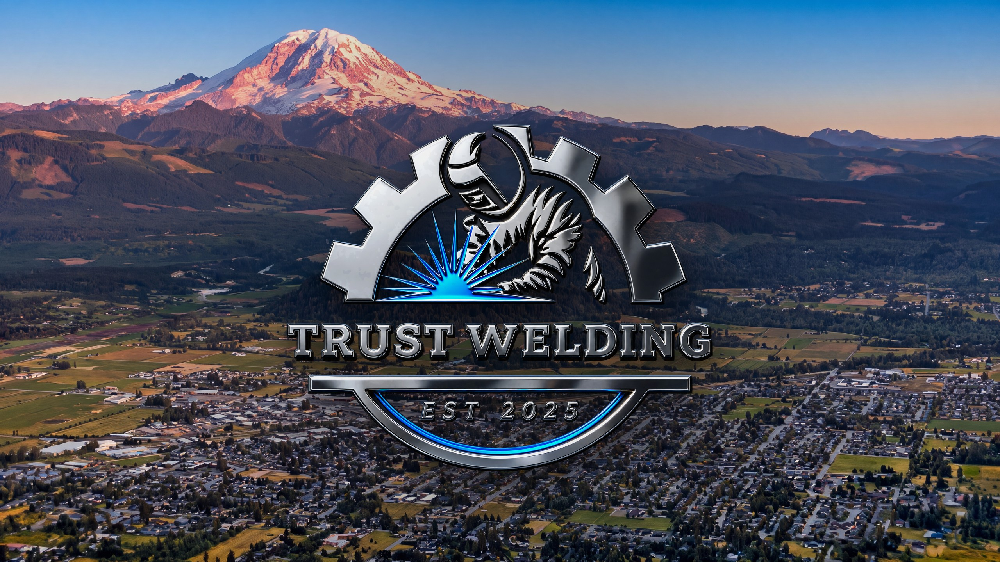

Real footage · two welds · the helmet lifts
Real welding footage through the lens (free stock, Mixkit license), two welds, then the lift onto your pick. No drawn sparks anywhere.
Tap to start if it didn't. Scroll or tap skips.
Skip
1 Arc
2 Bead
3 Flash
Real
Replay